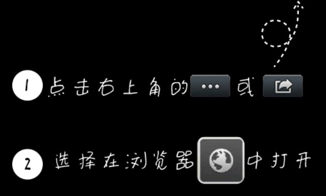

<!DOCTYPE html PUBLIC "-//W3C//DTD XHTML 1.0 Transitional//EN" "http://www.w3.org/TR/xhtml1/DTD/xhtml1-transitional.dtd">
<html xmlns="http://www.w3.org/1999/xhtml">
<head id="head">
<title>APP下载页面，兼容android、ios、微信、非微信环境</title>
<meta http-equiv="Content-Type" content="text/html; charset=gb2312" />
<meta name="viewport" id="viewport" content="width=device-width, initial-scale=1" />
</head>

<body>
<script>
//将本页面传到服务器，将网址(如 http://www.daojiatc.com/apk/erweima.html)生成二维码即可

//判断是否微信内置浏览器
function is_weixn(){  
    var ua = navigator.userAgent.toLowerCase();  
    if(ua.match(/MicroMessenger/i)=="micromessenger") {  
        return true;  
    } else {  
        return false;  
    }  
}

//根据手机端浏览器版本信息判断是android设备还是ios设备
function get_browser_version(){
	
//手机端浏览器版本信息
var browser = {
versions: function() {
var u = navigator.userAgent, app = navigator.appVersion;
return {//移动终端浏览器版本信息 
trident: u.indexOf('Trident') > -1, //IE内核
presto: u.indexOf('Presto') > -1, //opera内核
webKit: u.indexOf('AppleWebKit') > -1, //苹果、谷歌内核
gecko: u.indexOf('Gecko') > -1 && u.indexOf('KHTML') == -1, //火狐内核
mobile: !!u.match(/AppleWebKit.*Mobile.*/) || !!u.match(/AppleWebKit/), //是否为移动终端
ios: !!u.match(/\(i[^;]+;( U;)? CPU.+Mac OS X/), //ios终端
android: u.indexOf('Android') > -1 || u.indexOf('Linux') > -1, //android终端或者uc浏览器
iPhone: u.indexOf('iPhone') > -1 || u.indexOf('Mac') > -1, //是否为iPhone或者QQHD浏览器
iPad: u.indexOf('iPad') > -1, //是否iPad
webApp: u.indexOf('Safari') == -1 //是否web应该程序，没有头部与底部
};
}(),
}
if (browser.versions.ios || browser.versions.iPhone || browser.versions.iPad) {
	return "ios";	
}
else if (browser.versions.android) {
return "android";
}
return '';
// document.writeln(" 是否为移动终端: " + browser.versions.mobile);
// document.writeln(" ios终端: " + browser.versions.ios);
// document.writeln(" android终端: " + browser.versions.android);
// document.writeln(" 是否为iPhone: " + browser.versions.iPhone);
// document.writeln(" 是否iPad: " + browser.versions.iPad);
// document.writeln(navigator.userAgent);
}


//----[start]根据手机端操作系统类型和是否微信浏览器决定跳转链接
var is_weixn=is_weixn();//是否微信浏览器
var browser_version=get_browser_version();//浏览器版本：android、ios或空

//alert(is_weixn+'----'+browser_version);

var app_url_self='https://ari.anyremote.cn:8091/apk/ar.apk';//默认为自己的服务器上android版下载地址

var app_url_weixin=app_url_self;//腾讯应用宝生成的下载地址，兼容ios普通扫码、android普通扫码、ios微信扫码、android微信扫码
var app_url_360=app_url_self;//360手机市场

var app_url_ios=app_url_self;

//var html='<div style="width:100%;">请点右上角菜单“在浏览器中打开”</div>';
//提示下载图片：http://www.quanlaoda.com/static/team/2014/0719/14057596743654.jpg
var html="<div style='width:100%;filter:alpha(Opacity=50);-moz-opacity:0.5;opacity: 0.5;'></div>";


if(browser_version=="ios")
{	
	if(is_weixn==true)
	{
		//用ios微信直接扫appstore下载链接生成的二维码可以在ios浏览器中直接打开ios版的app，但是直接跳转appstore下载链接不能在ios浏览器中直接打开ios版的app
		//如果想要扫码直接跳到appstore，则ios版也要在应用宝申请外链，详见下文：
        //如何在应用宝上发布IOS app？https://www.zhihu.com/question/31669357
		document.write(html);
	}
	else
	{
		location.href=app_url_ios;
	}	
}
else if(browser_version=="android")
{	
	if(is_weixn==true)
	{
		document.write(html);
	}
	else
	{
	    location.href=app_url_self;
	}
}
else
{
    location.href=app_url_self;
}

//----[end]根据手机端操作系统类型和是否微信浏览器决定跳转链接

</script>
</body>
</html>